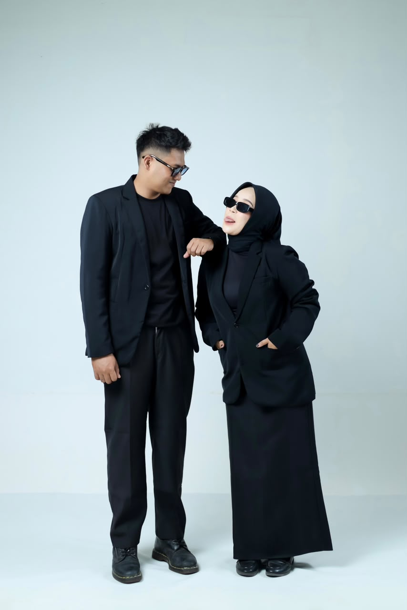
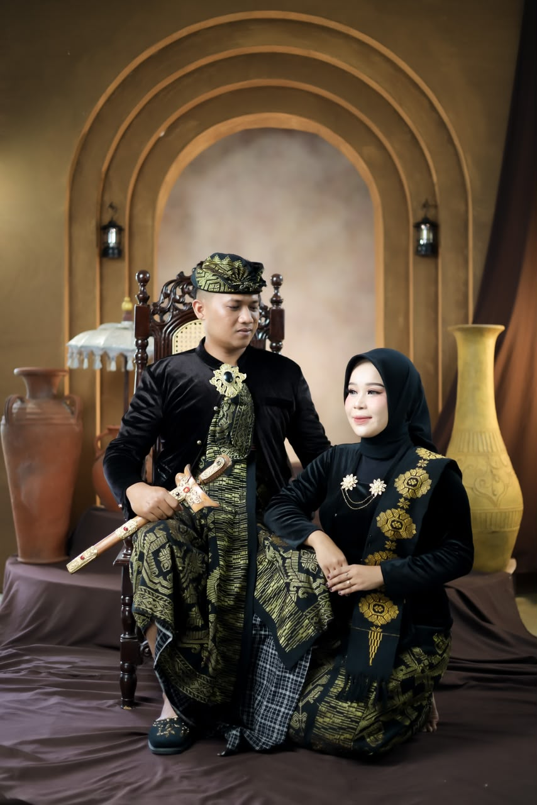
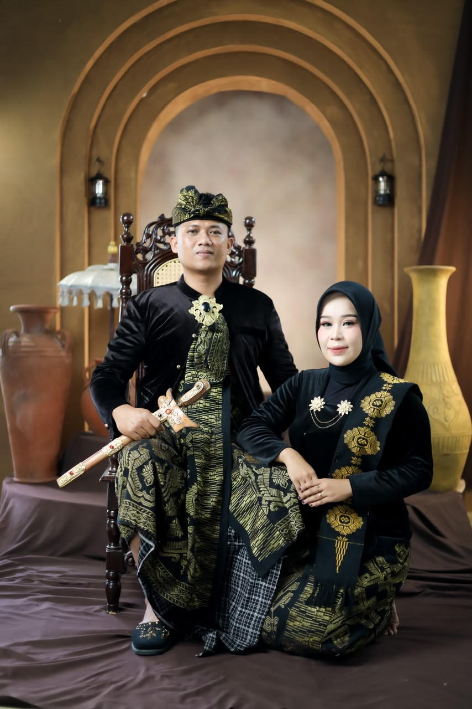

Bismillah
"Maha Suci Allah yang telah menciptakan makhluk-Nya berpasang-pasangan."
Ya Allah semoga ridho-Mu tercurah mengiringi pernikahan putra-putri kami:
Lalu Septa Adi Kesuma, S.Hut.
Putra Dari
Alm. Bapak Lalu Sabirin, S.Pd
& Alm. Ibu Ratsari
&

Sartika, S.Tr.Kes.
Putri Dari
Bapak Sukadep
& Ibu Nitranim
Love Story
Septa & Tika
Awal Bertemu

Pendekatan

Komitmen

Menikah
"Apa yang menjadi takdirmu, akan menemukan jalannya untuk menemukanmu."
- Ali bin Abi Thalib -
Save The Date
Puncak Acara Kami
Akad & Resepsi
Sabtu
05
Sep
2026
Waktu Pelaksanaan
Menyusul
Lokasi Acara
Jln Raya Anyar, Dusun Sri Menganti
Desa Anyar
Galeri Momen
Rekam Jejak Kasih





Tanda Kasih
Doa restu Anda merupakan karunia yang sangat berarti. Jika ingin memberikan tanda kasih, dapat melalui fitur di bawah ini.
Bank BCA
1234 5678 90
a.n Lalu Septa Adi Kesuma
DANA / OVO
0812 3456 7890
a.n Sartika
Belum ada ucapan, jadilah yang pertama!